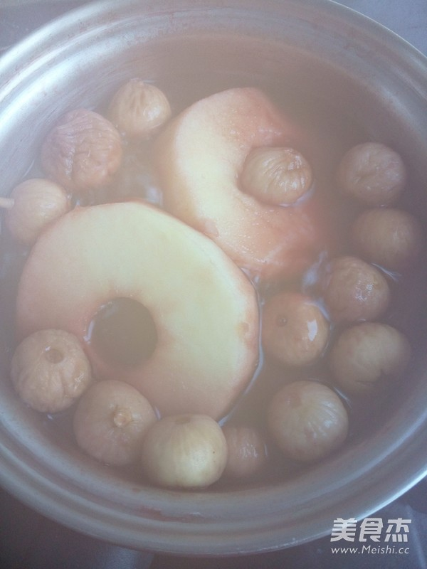
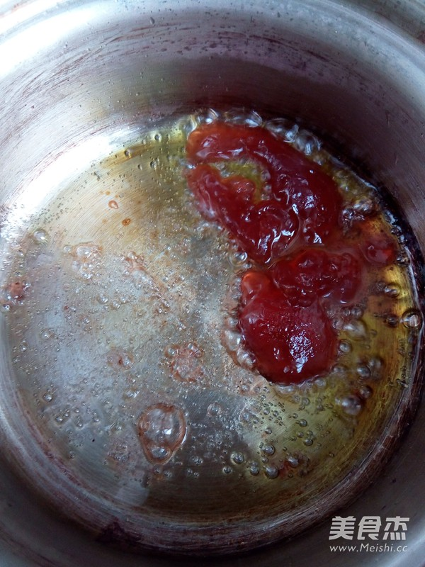
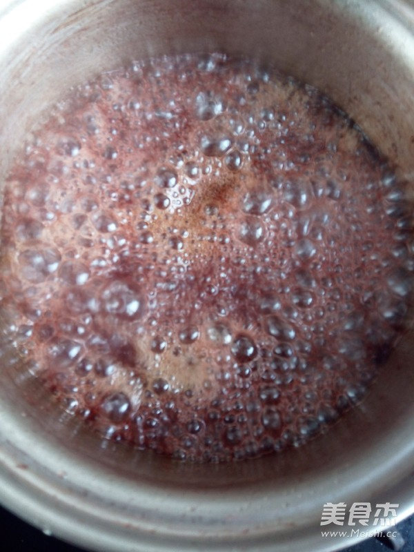
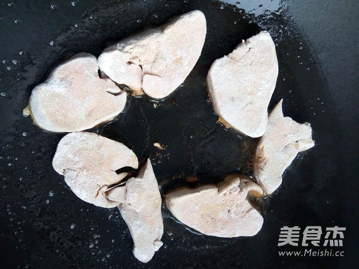
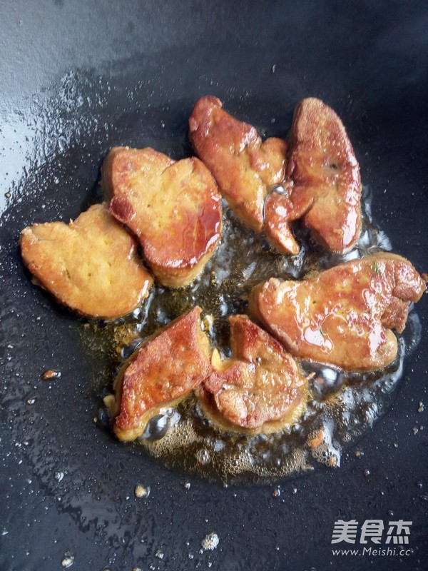

Culinary Art |
Culinary Art |
|  |  |  |
First Step: Remove the skin from the skin, remove the core, remove the core, remove the dried FIG, and cook for 10 minutes in advance, and cover with the lid. |
Second Step: Prepare the sauce: add 1 tablespoon of olive oil to the pan, add a spoonful of strawberry jam, add 2 tablespoons of red wine, 1 tablespoon of honey, sprinkle with salt and pepper. |
Third Step: Keep the fire up until it thickens. |
|  |  | |
Forth Step: The foie gras is salted with a dash of salt and pepper for 10 minutes, with a little flour on both sides. | Fifth Step: Place a small amount of olive oil in the pan and fry the goose liver until it is hot. | Sixth Step: Place prepared slices of bread, red wine apple slices, figs, chamomile, and a good strawberry sauce. |